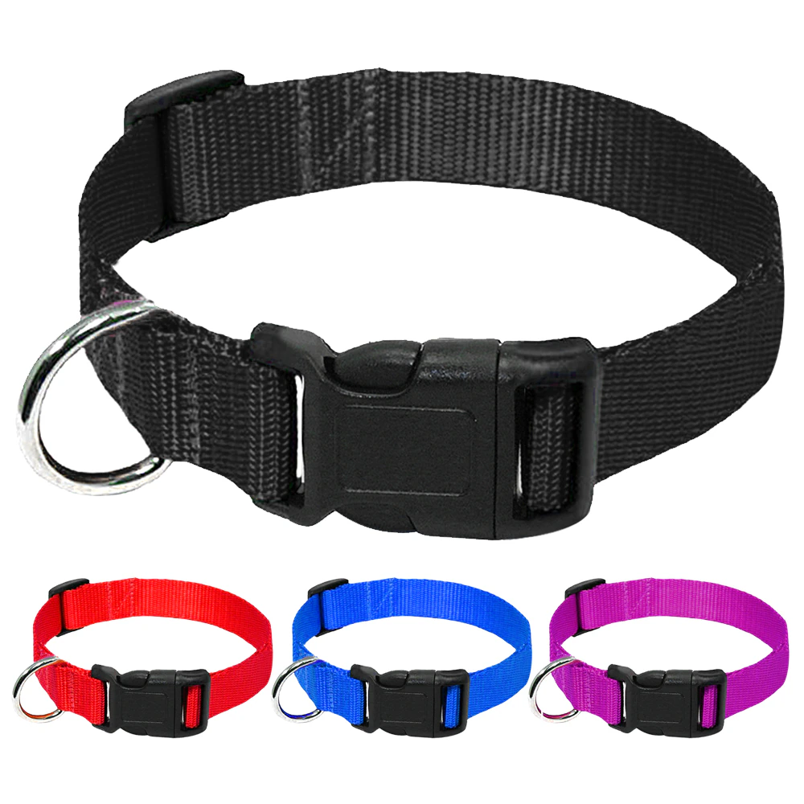

PET COLLAR
A piece of material put around the neck of certain pet animals, such as dogs, cats, or pigs, for control, identification, or other purposes. Identification tags and medical information is often placed on collars.